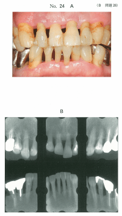
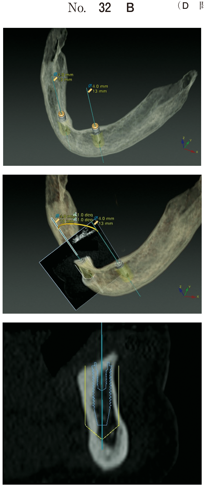

メインテナンス・SPT
メインテナンスとSPTの違い
| 項目 | メインテナンス | SPT |
|---|---|---|
| 対象 | 治癒（healing）した状態 | 病状安定（stable lesion） |
| 歯周ポケット | 3mm以下 | 4mm以上が残存 |
| BOP | なし | 一部に残存 |
| 歯の動揺 | 生理的範囲 | 動揺が残存することも |
| リコール間隔 | 6か月〜1年 | 3か月以内 |
メインテナンスの目的
主な目的
- 歯周治療で獲得されたアタッチメントレベルを維持
- アタッチメントロスを予防
- 補綴物・修復物の破損、齲蝕の発生を予防
- 口腔疾患の予防プログラムを遂行
メインテナンス間隔の決定
基本的な目安
| 状態 | 間隔 |
|---|---|
| 移行直後 | 1〜2か月後に再来院 |
| PCR 20%以下で良好 | 6か月〜1年 |
| 不安要素がある場合 | 3〜4か月 |
| SPT | 3か月以内 |
間隔を短くする要因
- プラークコントロールレベルが低い
- コンプライアンスのレベルが低い
- 歯周組織の再発傾向がある
- リスクファクター（糖尿病、喫煙など）の存在
- ブラキシズムなどの異常咬合習慣
メインテナンスの流れ
1. 医療面接
口腔内の異常、セルフケアの状況、生活環境の変化、全身疾患、ストレスなどを確認。
2. 口腔内検査
| 検査項目 | 内容・ポイント |
|---|---|
| 視診・触診 | 歯肉の色、形態、硬さ、露出根面の状態 |
| プラーク付着状態 | PCR、プラーク指数（PI） |
| 歯周ポケット測定 | 1歯4点または6点法 |
| アタッチメントレベル | 経時的変化を評価 |
| BOP | 歯周病活動性の評価に重要 |
| 歯の動揺度 | ブラキシズムの習癖がある患者で厳密に検査 |
| 根分岐部病変 | 最も問題を起こしやすい部位 |
| エックス線検査 | 1〜2年に1回 |
3. 検査結果の説明とモチベーション強化
4. メインテナンスにおける処置
- 口腔清掃指導（OHI）
- スケーリング・ルートプレーニング
- 歯面研磨（エアポリッシング）
- PMTC（プロフェッショナルメカニカルトゥースクリーニング）
- 薬剤の応用（0.2%クロルヘキシジンなど）
5. 次回来院の予約
臨床効果
Beckerの報告（1984年）
- SPTなし: 年間0.22本の歯の喪失
- SPTあり: 年間0.11本の歯の喪失
- → 喪失リスクを半分に抑制可能
関連過去問
103B26
70歳の男性。歯周治療終了後、SPT〈supportive periodontal therapy〉に移行することとした。移行時の口腔内写真（別冊No.24A）とエックス線写真（別冊No.24B）とを別に示す。
SPT期間中に前歯部で発生するリスクが高いのはどれか。2つ選べ。

a 食片圧入
b 歯根破折
c 急性歯髄炎
d 暫間固定の破損
e 歯肉縁上歯石の付着
b 歯根破折
c 急性歯髄炎
d 暫間固定の破損
e 歯肉縁上歯石の付着
正解：d, e
【解説】SPT中の前歯部では、暫間固定の破損と歯肉縁上歯石の付着がリスクとなる。暫間固定されている歯では固定装置の破損に注意が必要。また、歯肉退縮により露出した歯根面には歯石が付着しやすい。
108D43
43歳の女性。上顎前歯部の軽度の冷水痛を訴えて来院した。歯周基本治療後、2型糖尿病で血糖コントロール不良のため、SPT〈supportive periodontal therapy〉を実施していた。3日前のリコール来院時にスケーリング・ルートプレーニングを行ったところ、冷たいものがしみるようになったという。SPT開始時の口腔内写真（別冊No.43A）とエックス線写真（別冊No.43B）を別に示す。歯周組織検査結果の一部を表に示す。
適切な対応はどれか。2つ選べ。


a 咬合調整
b 歯周ポケット掻爬
c 抗菌薬の局所投与
d プラークコントロール
e 露出根面へのフッ化物の塗布
b 歯周ポケット掻爬
c 抗菌薬の局所投与
d プラークコントロール
e 露出根面へのフッ化物の塗布
正解：d, e
【解説】SRP後の知覚過敏への対応。露出した象牙質への刺激を軽減するため、フッ化物塗布が有効。また、適切なプラークコントロールを継続することが重要。